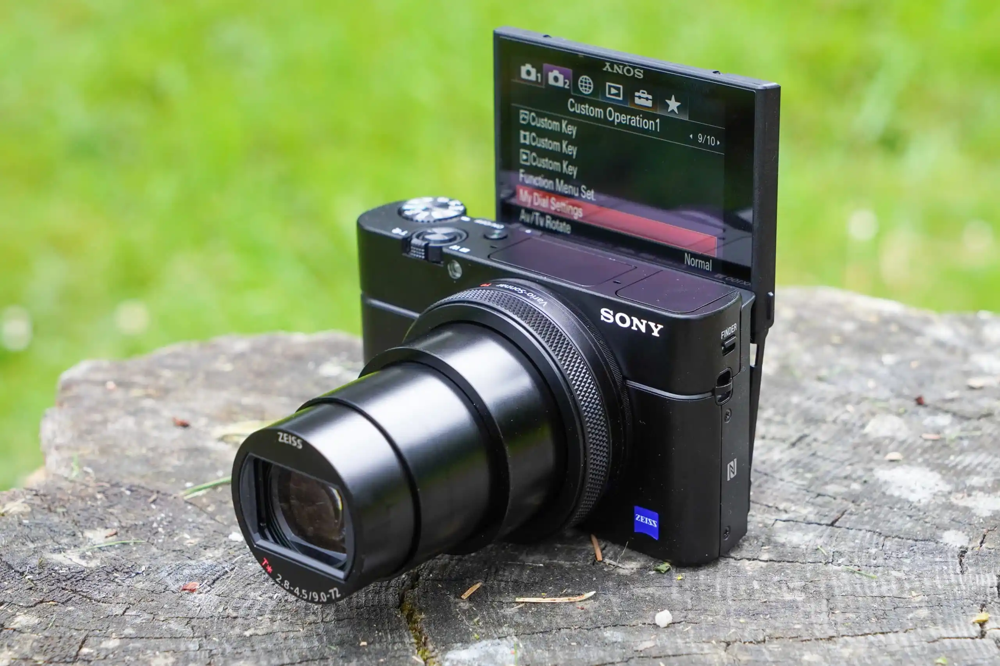

My Trip to Japan

Recently, I visited Japan with a group of my friends. The trip was an amazing experience and I learned so much about the culture there.
I can't wait to visit again!
I took nearly 4,000 photos during the trip. The photo displayed here is shot from a rooftop bar in Tokyo, overlooking the cityscape.
- Visited Tokyo, Kyoto, and Osaka
- Tried authentic Japanese cuisine
- Explored historic temples and modern cities
Camera I Used

I brought two cameras on the trip: my Sony RX100 VII and my Canon G7X Mark III. Both are compact and excellent for travel photography.
Initially, I used the Canon G7X Mark III for most of my shots, but I quickly realized that the Sony RX100 VII autofocus system was faster and more reliable, which was particularly beneficial when capturing spontaneous moments.
As a result, I switched to using the Sony RX100 VII for the majority of my photography during the trip.
In addition to the quality of the images, I found the Sony's video capabilities superior, allowing me to capture high-quality videos of my experiences as well.
Going forward, I plan to primarily use the Sony RX100 VII for travel photography and videography due to its excellent performance and versatility.
Kyoto Gyoen National Garden
This is a video of the Kyoto Gyoen National Garden.
It showcases the natural beauty and peaceful atmosphere of the garden, highlighting the greenery and traditional Japanese landscaping.
I captured this video during my visit to Kyoto.
It was a tranquil escape from Osaka, allowing me to immerse myself in nature.
Even though I had my camera with me, I decided to capture the scene with my phone.